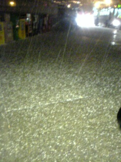
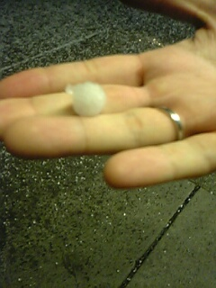

金曜夜は妻に誘われてちっちゃな劇団が公演する「ベニスの商人」を見に行った。
BART に乗って Balboa Park に辿り着くと、突然駅構内が停電！
でも他の皆様は平然としてるのがちょっと奇妙。停電ってそんなに普通に起こることなんだろうか？
家でコンセントにつなぎっぱなしの PowerBook が壊れないかちょっと心配。
駅から上がって地上に出ると雨は降っていないものの雷がゴロゴロ鳴っている。
うーん、さっさと目的の City College に辿り着かないと降られるかな？と思いきゃすぐさま雹が降ってきた。

ひょうだ！
珍しいなーと思えばサイズがみるみる大きくなってついにはビー玉くらいの巨大なものに！

こんなにデカい！
雹は激しく降りしきり、ものの数分で積もってしまった。
駅前はちょっと坂道なので、車が立ち往生するはバイクがこけるわで大混乱！
ものの数分で銀世界！
家の周りは地面がわずかに濡れている程度でひょうが降った様子は全くなし。
かなり局地的なものだったのでしょう。なんか得した気分。
ひょうが降った Balboa Park 付近を Google Maps で。
トラックバックURL http://yusuke.homeip.net/diary/.action?entry=1142195361620